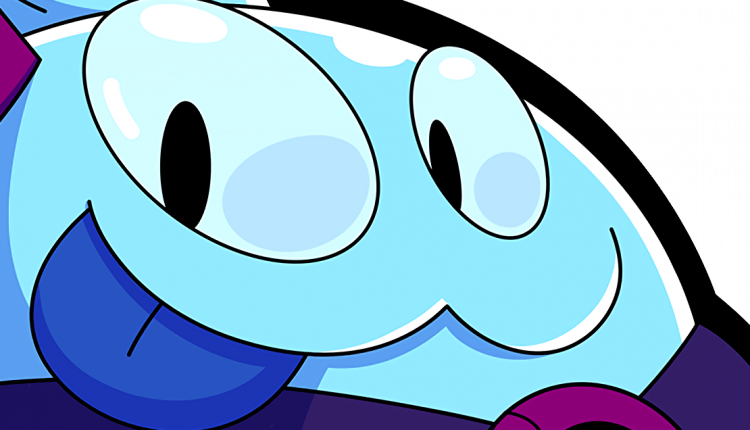

Squeak - Wiki, Informações, Skins e Ataques
"Squeak é uma criação acidental do Coronel Ruffs. A sina de Squeak é brincar de buscar o graveto... ou a bola... ou algo do tipo!"
O Squeak é um personagem do tipo Controle e de raridade Mítica. De acordo com os desenvolvedores, o Squeak faz parte da Força Estelar e é um alienígena que surgiu através de uma baba que estava acumulada nos brinquedos do brawler Coronel Ruffs.
A sua aparência é de uma criatura feita com um liquido viscoso (baba do Ruffs), possuindo todos membro, mas com um colete com pins e um pequeno chapeu.
Uma criação acidental do Coronel Ruffs. A sina de Squeak é brincar de buscar o graveto… ou a bola… ou algo do tipo.

Ataque: Bolha Pegajosa
As bolhas de gosma de Squeak são instáveis e explodem fazendo um baita estrago! Elas grudam nos alvos atingidos e também em quem estiver perto.
Ele joga brinquedos que explodem nos inimigos. Esses brinquedos conseguem grudar nas paredes dos mapas e nos próprios brawlers adversários, por estarem cheios de baba do Ruffs.

Super Habilidade: Bomba Gosmenta
Squeak arremessa uma bomba que explode com gosto após um certo tempo! A explosão de gosma atordoa oponentes próximos e lança seis bolhas pegajosas em todas as direções.
O Super dele permite com que jogue uma bomba que ao ser detonada (depois de uns segundos) atordoa os adversários na área e ainda espalha outras bolhas (iguais as do seu ataque principal) e grudam em várias direções.
Acessório
Esse Brawler possui Acessórios que são desbloqueáveis após atualizá-lo para o nível 7, podendo ser comprados usando moedas. O jogador escolhe qual deles utilizar em partidas.
Entenda como funciona cada Acessório:

Goma Elástica
Aumenta o dano da bolha pegajosa de Squeak em 50% e alcance em 100%.
Ativando o acessório, a próxima bolha pegajosa do seu ataque tem um alcance e dano maior.
Utilização por partida: 3 vezes

Resíduo
Após explodir, a próxima bolha pegajosa do Squeak deixa um resíduo que desacelera os inimigos e permite aos aliados verem dentro dos arbustos por 8 segundos.
Ao ativar o acessório, o próximo ataque do brawler solta um resíduo que deixa os adversários lentos q revela eles dentro de arbustos.
Utilização por partida: 3 vezes
Poder de Estrela
Os Poderes de Estrela são desbloqueáveis à partir do momento que atualizar o brawler para o nível 9, a partir disso o jogador poderá compra-los usando moedas.
Saiba tudo sobre os Poderes de Estrela do Squeak:

Efeito Crescente
Cada oponente dentro da área de explosão de uma bolha pegajosa aumenta o dano da bolha em 15%.


Supergrude
Explosões das bolhas pegajosas geradas pelo Super de Squeak também desaceleram os adversários por 4 segundos.
Ao ativar esse Poder de estrela, o Poder do Super (Bolhas Pegajosas) deixam os adversários mais lentos por 4 segundos.
Mudanças de Balanceamento
- No Balanceamento de 25/08/2021, a velocidade do projétil de ataque principal aumentou em 25%. O atraso de explosão da Bomba Gosmenta removido. E o tempo de voo do Super agora é constante.
- Após o Balanceamento de 16/12/2021, foi implementado um aumento do dano do ataque principal (de 1.000 de 1.080).
- Com a implementação do Balanceamento de 27/04/2022, o “Goma Elástica” passou a aumentar o dano do próximo ataque para 50%.. E o “Resíduo” passou a durar 20 segundos (antes era 15s).
- Na Atualização de Fevereiro de 2023 sua classe mudou, de Destruidor para Controle.
- Com as mudanças de Balanceamento de 27/06/2023, foi aumentado o dano no Poder de Estrela “Efeito Crescente”.
- Nas alterações de Balanceamento de 05/09/2023, foi reduzido o efeito do Acessório “Resíduo” e o dano do Poder de estrela “Efeito Crescente”.
- Na Atualização de Setembro de 2023 a vida e o dano de todos os Brawlers aumentaram de 5% para 10% em cada nível de poder.

Dicas para jogar com o Squeak
- O Squeak é ótimo para modos como Roubo e Caça-Estrelas porque seu Super pode causar uma quantidade incrível de dano, semelhante ao ataque do Spike. Seu amplo potencial de área também permite que ele atravesse arbustos, mas seu atraso exigirá habilidades de acerto no tempo certo.
- Lembre-se de que as bombas pegajosas de Squeak podem se fixar em quase todos os obstáculos e todos os geráveis. Isso pode ter muitos resultados únicos e imprevisíveis, como atacar Bolhas Pegajosas nos carrinhos da Mina para que eles viajem até os inimigos e (junto com o dano de 2.000 do carrinho) nocauteie os inimigos caso eles fiquem presos.
- Ele pode lançar seus Ataques/Super para um ponto estratégico que cerque o adversário ou área importante como uma área de geração de Parafusos do Encurralado ou a Mina de Gemas do Pique-Gema para assustar os inimigos de irem para essas áreas por um breve momento.
- Embora o Super dele possa cobrir uma boa parte do mapa, as bombas não têm um grande alcance e jogadores experientes podem detê-las. Mire como o ataque do Tick para evitar que os inimigos entrem em um ponto.
- Ao jogar com o brawler no Combate Solo, mantenha um colega de equipe com dano de explosão de curto alcance, como o Bull, para cobrir o ponto fraco do Squeak de lutar de perto.
- Apesar do Super do Squeak conseguir cobrir uma boa parte do mapa, as bombas não têm um grande alcance de explosão e jogadores experientes podem detê-las. Mire como você faria com o ataque do Tick para evitar que os inimigos entrem em um ponto.
- Ele pode ser usado para desencorajar os inimigos de usar teletransportadores. Se você ver um teletransportador acender após o resfriamento, tente jogar suas Bombas Pegajosas para o teletransportador para que os inimigos recebam danos no momento em que saírem dele ou evite teletransportar se eles souberem que há uma bolha em seu destino.
- O Brawler pode causar dano a vários inimigos ao mesmo tempo. Isso é útil em mapas com uma infinidade de paredes, onde os inimigos frequentemente se agrupam. Como o Squeak pode acertar muitos inimigos, ele pode carregar seu Super mais rápido e enfraquecer o time inimigo.
- Ao jogar com ele no Combate em Dupla, mantenha um colega de equipe com dano de explosão de curto alcance, como um Bull, para encobrir a fraqueza de Squeak em combates de perto.
Skins do Squeak
O Brawler possui mais skins, veja todas elas abaixo.